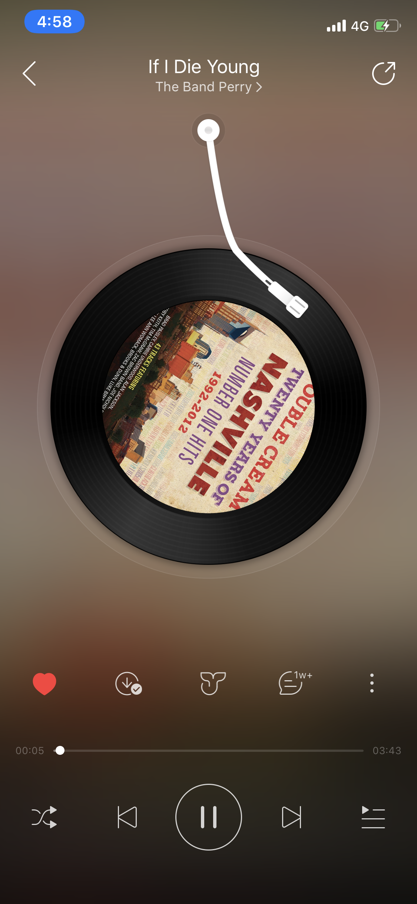
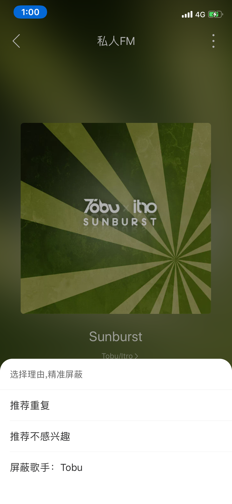
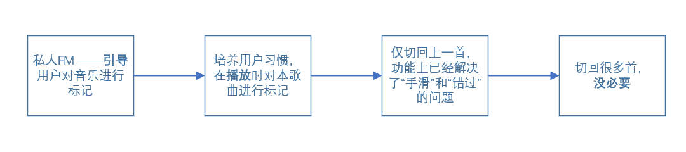
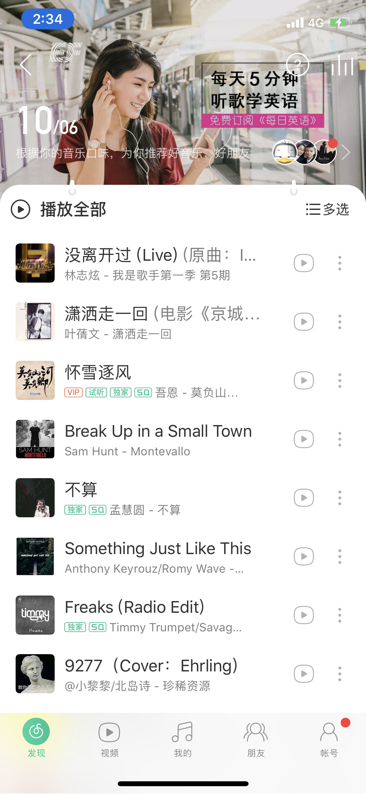
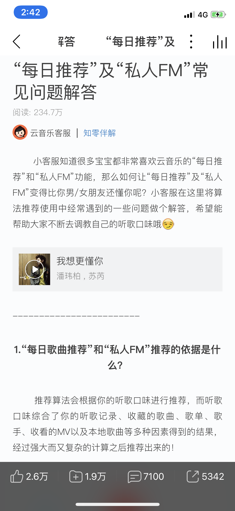

火花 Sparkle
这里记录一些学生产品经理的观察和思考。一家之言，定有谬误之处，请诸君不吝指教。
今天的一个小思考：
网易云音乐的私人FM为什么没有“上一首”？分析网易云音乐的私人FM 功能
发布于2019/06/05
网易云音乐是一款很流行的音乐软件。最近在看网易产品研究院录制的《产品经理》教学视频，其中“需求挖掘”这一章节，主讲人拿《网易云音乐》来做为案例， 说明团队内部也对这款产品相当满意，当然市场上的成功也反映了这一点——即使在与QQ音乐的版权战争中节节败退， 用户的流失也是可控的——说明一个软件的UI、交互、调性甚至能弥补核心内容上的缺失。 不要觉得产品和设计不重要了啊喂！
我们在使用过程中，可能会发现，播放“歌单”和“本地歌曲”时，会自动生成播放播放列表，播放界面中，是可以操作“上一首”的。 而在“私人FM”中，没有“播放列表”，“上一首”的按键消失了。今天我想尝试对这一设计的原因进行分析，并说明我对此的评价。
免责条款：以下观点是基于我的推测，论据不一定得到验证和支持。写作本文的目的是学习尝试从产品经理的角度进行思考。
1. 现状
1.1 歌单
现在，播放“歌单”和“本地歌曲”的时候，播放界面是这样的。

图中主要有12个按钮，从上到下从左到右分别是
a. 分享
b. 喜欢
c. 下载到本地
d. 鲸云音效
e. 评论
f. （下一级操作菜单入口）
g. 进度条
h. 循环模式
i. 上一首
j. 播放/暂停
k. 下一首
l. 生成的播放列表
1.2 私人FM

图中下方的按钮被削减为7个，分别是
a. （下一级操作菜单入口）
b. 进度条
c. 垃圾桶（垃圾桶里的歌曲不在“私人FM”和“个性化推荐”中出现）
d. 喜欢
e. 播放
f. 下一首
g. 评论
2. 界面对比
通过对这两个界面的观察，可以得出，两播放界面的相同点和不同点：
2.1 相同
2.1.1 播放/暂停键和进度条
播放/暂停键和进度条是音乐播放软件的基础配置。
（为什么抖音视频没有进度条功能？）
2.1.2 喜欢
听到自己喜欢的歌，点击红心，收藏入“我喜欢的音乐”歌单。
我对这个功能的巧妙性佩服到五体投地：它是用户主动发起的，简单的，采集信息的一个功能。
主动发起：用户有收藏喜欢的音乐的需求，无须引导，用户会主动使用。
简单：点击一下“喜欢”，再点击一下取消“喜欢”，非常简单。
采集信息：可以采集到用户的喜好，进而向其推荐类似的音乐，甚至听歌风格类似的用户。
2.1.3 评论
查看用户发布的评论，对其点赞、回复，或自己撰写评论，巧妙地将音乐产品加入了社交因素。 这个是网易云音乐的护城河，吸引用户发布自己的想法、回忆、感受，吸引其他用户来阅读他的故事。
2.1.4 下一首
下一首即“跳过”，跳过蕴含着多个含义：
可能是不喜欢这个歌曲，
可能是对这类歌曲无感，
可能是喜欢，但当前场景、心情不适合
可能是最近听得比较多听腻了……
所以虽然“跳过”类似于“喜欢”也能反映出一些信息，但是由于多重含义混杂在一起，它反映出信息的准确度是比较低的，不建议采集“跳过”来做算法的输入。
2.1.5 下级菜单入口
点击较少的功能。
2.2 歌单独有
2.2.1 分享
分享给其他人或发布到动态。（在私人FM中被放在下级菜单的入口中，可能是点击较少的功能。）
2.2.2 下载到本地
2.2.3 鲸云特效
2.2.4 循环模式
（私人FM连播放列表都不提供，循环模式无意义）
2.2.5 上一首
上一首有两个含义：这首歌我要再听一遍，手滑了我要回到上一个。
我个人觉得用户操作“上一首”是能反映出一些珍贵信息的——
If 这首歌没被跳过，没被切歌，播放结束后被“上一首”：很喜欢
If 被切歌，被“上一首”：误触
2.2.6 播放列表
主要用于查看之前，之后播放的音乐。可用于简单编辑播放列表。此功能对于随机党来说其实作用有限。
2.3 私人FM独有
2.3.1 垃圾桶
垃圾桶里的歌曲不在“私人FM”和“个性化推荐”中出现。垃圾桶其实可以分析，因为被选入垃圾桶的歌曲一定是经过用户深思熟虑的， 抱着“此生不见”的心情，总能反映出他的喜好和厌恶。
3. 对私人FM 的分析
网易云音乐的对私人FM 的介绍是：根据你的听歌口味进行歌曲推荐。包括界面设计，就是期望用户配合完成对歌曲的拣选。 与歌单的播放界面相比，私人FM 的特有功能是“垃圾桶”。
3.1 垃圾桶
点击垃圾桶标记“屏蔽”，选择“屏蔽”的理由后，切换至下一首音乐。理由包括：重复，不感兴趣，或屏蔽该歌手。

重复可能包括：
同一歌手同一歌曲（例如：收录在不同专辑中）；
同一歌手不同版本（例如：演唱会版本）
不同歌手（例如：翻唱）
信息错误（如上传人漏填、错填等）造成的重复。
提交重复可以为维护整理曲库提供信息，且可以避免该操作对算法造成负面影响。（因重复而放入垃圾箱的歌曲不一定是不受喜爱的）
不感兴趣：
我个人觉得用“不感兴趣”来描述是不准确的。应该是强烈一点，例如“不喜欢”。 在我看来，点击“下一首”，甚至“播放完，无操作”可以说是“不感兴趣”，点击垃圾桶把这首歌扔进去应该是不喜欢。这也应该是点击垃圾桶的而不是划走（下一首）的原因。 这是用户因听到不喜欢歌曲而点击“垃圾箱”的最常用的路径。屏蔽原因是强制选择的，此项应是首选项和默认项。
屏蔽该歌手：
很强烈的不喜欢。用户点击确认屏蔽该歌手后可能比较有快感。（可以提示：已为您屏蔽所有xxx的歌曲）
3.2 上一首
在界面中，“上一首”的按键位置被垃圾桶取代。 “上一首”功能并非完全取消，而是被隐藏起来并弱化。右划歌曲的专辑封面，会切换到“上一首”，但只支持回切一次，即上一首的上一首不能被回切。 在上文2.2.5中，我分析用户点击“上一首”有两个原因：一是喜欢，二是误触。而无论是喜欢还是误触，回切一次，理论上“回切一次”已经满足了。
私人FM的功能是，帮助用户发掘用户可能喜欢的，听过次数较少的歌。不能回切，不能查看播放列表的话，只能说明，这个功能就是为用户主动挑选音乐而设计的。 期待用户的主动操作，提供即时反馈。用户场景应该是花费一段比较整块的时间，每首歌听十几秒至几十秒，选择“下一首”还是“喜欢”，对推荐的歌曲进行筛选。 之所以说十几秒到几十秒，是因为用户对每首歌的注意力只能持续这么短的时间。即使是喜欢的乐曲，用户也不能够长时间保持注意力吧。
但实际上，我们使用音乐类的软件时，时间很少是整块儿的。我们可能在等公交车时打开音乐，但选择歌单播放后就会回到“微博”等App； 我们可能在洗澡前选择播放列表，在洗澡时听歌，但此时没法操作手机；此时听到的很感兴趣的歌曲，在能腾出时间来操作时，已经不能在“私人FM”的操作界面查看了。 重度用户可以通过播放历史来查看，但要求一般用户这么熟悉软件的功能是否对用户造成了不便呢？
所以，总结一下，我认为弱化和隐藏“上一首”的逻辑在此：

4. 对私人FM 的畅想
这里说一点我对私人FM 的一点畅想。如果我是产品经理，我发现了什么问题，我希望产品向什么地方改变？
4.1 明确标记功能，并为此对算法进行适配。
我觉得网易云音乐对私人FM 功能对用户说明得很不明确。
基于个人使用经历，出现在私人FM 中的歌曲，至少是没有被“喜欢”过，应该是也没有听过。也就是说，用户播放过的歌曲不会再出现在“私人FM ”中。 如果是只有用户从未播放过的歌曲才会进入“私人FM”，那就太恐怖了，很可能用户某次随意的滑动跳过歌曲，或者当时没有对歌曲进行操作， 就造成这首歌再也无法在“私人FM”中被推荐，这是很严苛的且没必要的。
私人FM 的功能到底是什么？如果是对用户推荐歌曲，让用户筛选，那么私人FM 中的歌曲，除了已被标记“喜欢”、“不喜欢”的歌曲，都能够多次在此列表中出现。 如果要设定进入私人FM的歌曲必须是用户陌生的歌曲，则也可设定规则：“30日（180日）内播放次数少于1（几）次”。
4.2 通过交互动画等方式，鼓励用户进行标记。
如果想把私人FM 作为用户发现新音乐的主入口，并采集个性化数据，请鼓励用户主动对歌曲进行标记，可以通过动画效果等方式，例如“喜欢”“垃圾桶”按钮的跳动； 甚至可以默认播放歌曲的最热门的片段（而非全曲），方便用户进行标记。
5. 私人FM 和 每日推荐的区别在哪儿？

上图是网易云音乐的另一个功能，每日推荐。 这个功能占据软件首页的第一个入口，应该是产品主推的功能之一。该功能每天根据用户“口味”，向用户推荐30首歌曲。

根据官方的FAQ，“每日推荐”和“私人FM ”都是根据用户的听歌口味（听歌记录、收藏歌曲、歌单、歌手、收看MV、本地歌曲）进行推荐， 但对每日推荐和私人FM 的区别并没有说明。那么这两个功能有什么区别呢？
根据我前文的分析，我认为，
每日推荐更倾向于向用户推荐一键播放的歌单歌曲，不会主动要求用户的输入和反馈；私人FM 更倾向于引导用户主动输入和反馈。
每日推荐可能更加“静态”，即使用户听完了本日的30首歌曲（并对歌曲进行了标记），今日也不会提供更多的歌曲推荐，播放列表是有限且可循环的；
私人FM 更加“动态”，用户可以不停地发现新歌曲，播放列表无限且不可循环。
每日推荐更像是算法的输出，而私人FM 更可能是算法的输入。